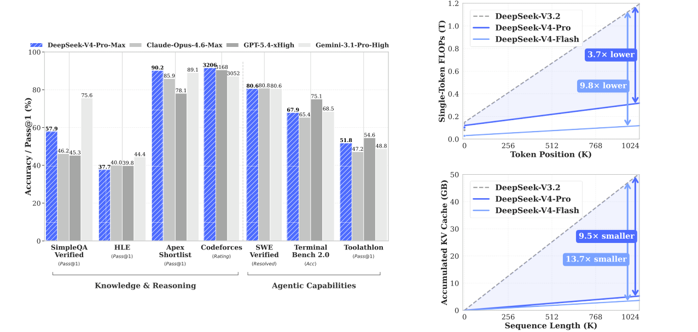

DeepSeek-V4 系列论文解读
引言：百万 token 上下文的效率挑战
理解为什么长上下文是测试时缩放与长程任务的瓶颈，以及 DeepSeek-V4 系列的核心突破。
长上下文为什么难
推理模型通过 test-time scaling 获得了显著的能力提升，但代价是生成更长的思维链。与此同时，agent 工作流、跨文档分析等场景也在推动上下文长度向百万 token 迈进。
瓶颈在于标准注意力机制的二次复杂度：序列越长，每个 token 都要与前面所有 token 计算注意力，计算量和 KV Cache 都会急剧膨胀。
为什么 test-time scaling 会让长上下文效率问题变得更紧迫？
推理模型会生成很长的中间思考 token，导致上下文本身变长；而 attention 的 FLOPs 和 KV Cache 随序列长度二次或线性增长，效率会快速下降。
DeepSeek-V4 系列是什么
DeepSeek-V4 系列预览版包含两个 MoE 模型：
- DeepSeek-V4-Pro：1.6T 总参数，49B 激活参数。
- DeepSeek-V4-Flash：284B 总参数，13B 激活参数。
两者都支持 1M（一百万）token 上下文长度。
核心升级有三点：
- 混合注意力架构：Compressed Sparse Attention（CSA）+ Heavily Compressed Attention（HCA）。
- Manifold-Constrained Hyper-Connections（mHC）：增强传统残差连接。
- Muon 优化器：提升收敛速度与训练稳定性。
来源：DeepSeek-V4 论文，Abstract。
效率提升有多显著
在 1M token 上下文中，与 DeepSeek-V3.2 相比：
- DeepSeek-V4-Pro 的单 token 推理 FLOPs 仅为其 27%，KV Cache 仅为其 10%。
- DeepSeek-V4-Flash 更进一步，单 token FLOPs 仅 10%，KV Cache 仅 7%。

来源：DeepSeek-V4 论文，第 1 节与 Figure 1。
为什么这很重要
百万 token 上下文不只是“能装更多内容”。它让以下事情变得更可行：
- 长程推理与深度研究
- 跨多文档的复杂分析
- 长 horizon 的 agent 任务
- 进一步的 test-time scaling
DeepSeek-V4 系列支持的最大上下文长度是多少？
一百万 token（1M tokens）。
模块小结
- 长上下文效率是 test-time scaling 和长程 agent 任务的关键瓶颈。
- DeepSeek-V4 通过混合注意力、mHC 和 Muon 优化器，在保持能力的同时大幅降低长上下文开销。
- 在 1M token 场景中，V4-Pro 和 V4-Flash 的推理 FLOPs 与 KV Cache 都显著优于 V3.2。